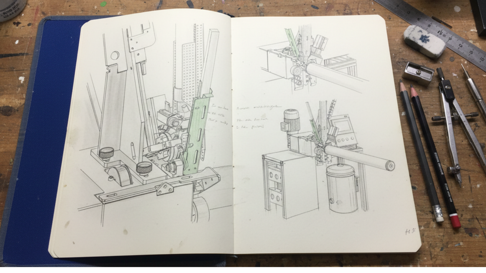
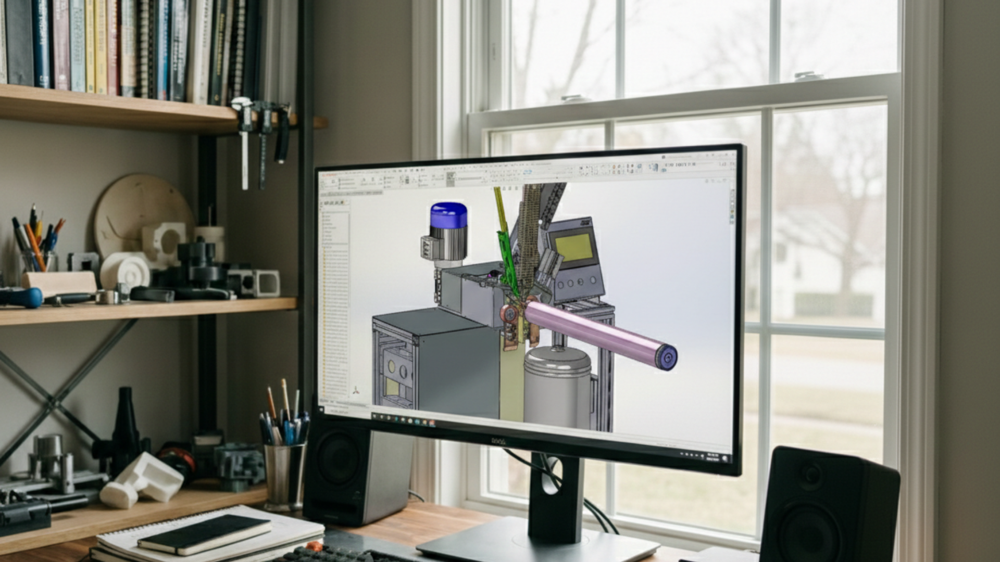

¿Cuánto Te Cuesta Realmente Que Una Máquina Se Pare Esperando Un Plano 2D?

La ingeniería inversa y los catálogos de recambios en 3D permiten fabricar piezas al momento con error cero. Deja de perder miles de euros al año por culpa de la incertidumbre documental.
El Mito Del "Ya Os Haremos Llegar El Plano"
La producción se detiene. Una pieza crítica en la célula de ensamblaje ha cedido. Llamas a mantenimiento y escuchas la respuesta que hace temblar cualquier margen de beneficios: "Tenemos que encontrar el plano original antiguo para enviarlo a cortar".
Mientras alguien rebusca entre archivos 2D amarillentos o carpetas PDF desordenadas, tu fábrica está perdiendo dinero. Cada minuto inactivo no regresa. Esto no es solo un problema de mantenimiento; es una deficiencia crónica en tu optimización industrial.
De Los Folios Obsoletos a la Precisión Digital Industrial
El mantenimiento del 2026 ya no vive de papel. Pasar a un modelo digital significa blindar tu volumen de fabricación. En EST Ingenieros apostamos por la ingeniería remota para solucionar esto de raíz antes de que aparezca el fallo.

¿Cómo lo hacemos? Creando un ecosistema 3D completo de tu equipo:
- ⏱️ Recambios Inmediatos: ¿Se rompe una pieza? En minutos se exporta al fabricante (con precisión geométrica perfecta) un DXF preparado para corte láser o CNC. Ningún retraso.
- 📐 Ingeniería Inversa Para Maquinaria Descatalogada: Incluso si el fabricante original de tu máquina cerró, nosotros reproducimos la pieza desgastada en CAD 3D con exactitud milimétrica.
- 🔗 Libre de Errores de Tolerancia: Un diseño parametrizado moderno no da pie a asimetrías de montaje en tu taller. Ajuste 100% de calidad garantizado desde el minuto uno.
Una Oficina Técnica Creada Para Eliminar La Ineficiencia
Tu experiencia industrial sumada a nuestras capacidades avanzadas en modelado 3D crean una combinación de eficiencia a prueba de paradas.
Trabajamos 100% en remoto, lo cual significa que somos mucho más rápidos que un desplazamiento tradicional de técnicos a tu taller. Si tienes un subconjunto mecánico que necesitas catalogar o actualizar de forma profesional, nuestras tecnologías CAD aseguran una estabilidad dimensional absoluta sin complicar tu operatividad diaria.
¿Necesitas ayuda con el diseño técnico?
En EST Ingenieros combinamos el conocimiento técnico de taller con el diseño 3D avanzado para ofrecerte soluciones industriales listas para producción.
Pedir Presupuesto